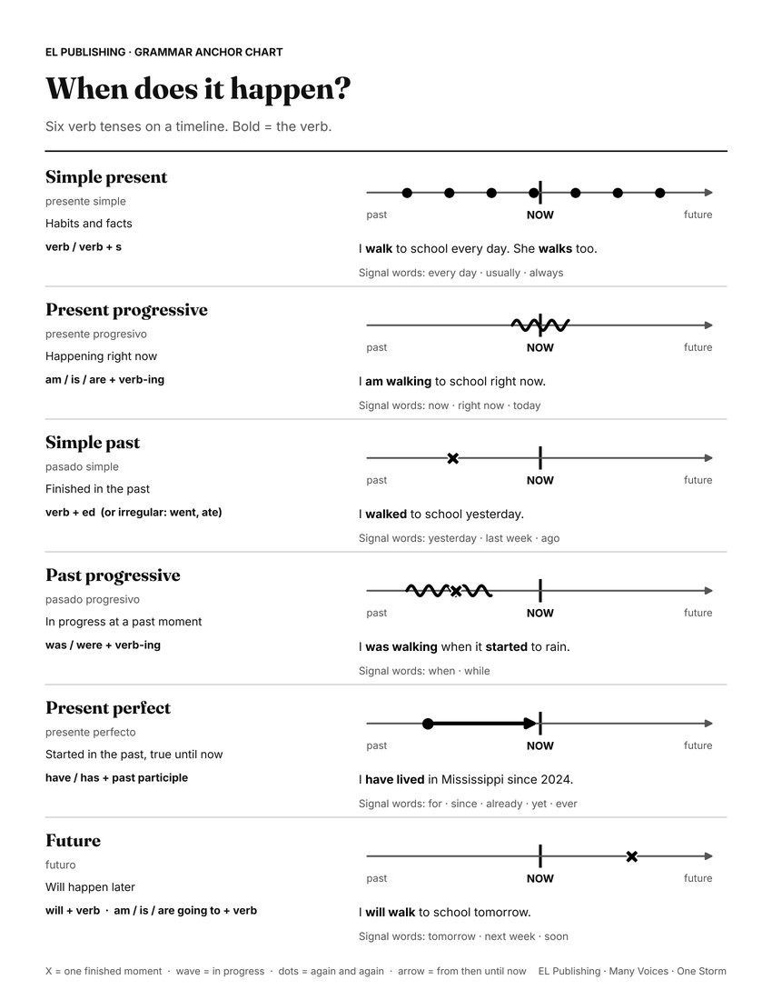

The chart

Print version · PDFOne letter page, black and white. The marks are shapes, not colors, so nothing is lost on a copier.
Projector version · PNGNavy and gold, 16:9. Cards paired so students compare present with present progressive, past with past progressive.
Three ways to use it
- Point to the timeline (5 minutes). Read a sentence aloud. Students point to the timeline that matches it, then say which signal word told them. “Since” points to the arrow; “yesterday” to the X before now.
- Draw it (10 minutes). Give five sentences from your content. Students draw the timeline for each one: an X, a wave, dots or an arrow. Works in science (“The ice has melted”) and history (“The soldiers were marching when…”).
- Fix it (warm-up). Write one sentence with the wrong tense for its signal word: “I walk to school yesterday.” Students find the clash and fix the verb.
The six tenses, as text
| Tense | Use · what the timeline shows | Form | Example | Signal words |
|---|---|---|---|---|
| Simple present presente simple | Habits and facts Dots across the whole line: again and again | verb / verb + s | I walk to school every day. She walks too. | every day · usually · always |
| Present progressive presente progresivo | Happening right now A wave at NOW: in progress | am / is / are + verb-ing | I am walking to school right now. | now · right now · today |
| Simple past pasado simple | Finished in the past One X before NOW: one finished moment | verb + ed (or irregular: went, ate) | I walked to school yesterday. | yesterday · last week · ago |
| Past progressive pasado progresivo | In progress at a past moment A wave in the past, cut by an X | was / were + verb-ing | I was walking when it started to rain. | when · while |
| Present perfect presente perfecto | Started in the past, true until now An arrow from the past up to NOW | have / has + past participle | I have lived in Mississippi since 2024. | for · since · already · yet · ever |
| Future futuro | Will happen later One X after NOW | will + verb · am / is / are going to + verb | I will walk to school tomorrow. | tomorrow · next week · soon |
The Grammar & Writing series
The Grammar Map
Sentence-Frame Bank
Find it in Many Voices Academy · Writing & Grammar Lab
Free to print and share. Use it in any classroom. The Spanish names help students connect each tense to what they already know.